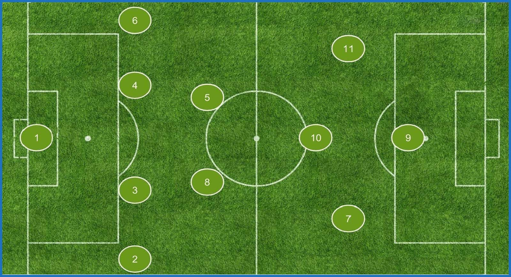

|

|
¿PARA QUE SIRVE MYTEAM?
El funcionamiento de esta página es hacer un sistema de recomendaciones sobre jugadores de fútbol.
Se basaría en estudiar una serie de estadísticas, ya sean por ejemplo: asistencias, goles, balones recuperados, perdidos, etc..
Esta página trata de como digo antes estudiar las estadísticas de los jugadores para poder recomendar jugadores de fútbol que puedas incluir en tu equipo
en base a las condiciones que tu elijas.
|